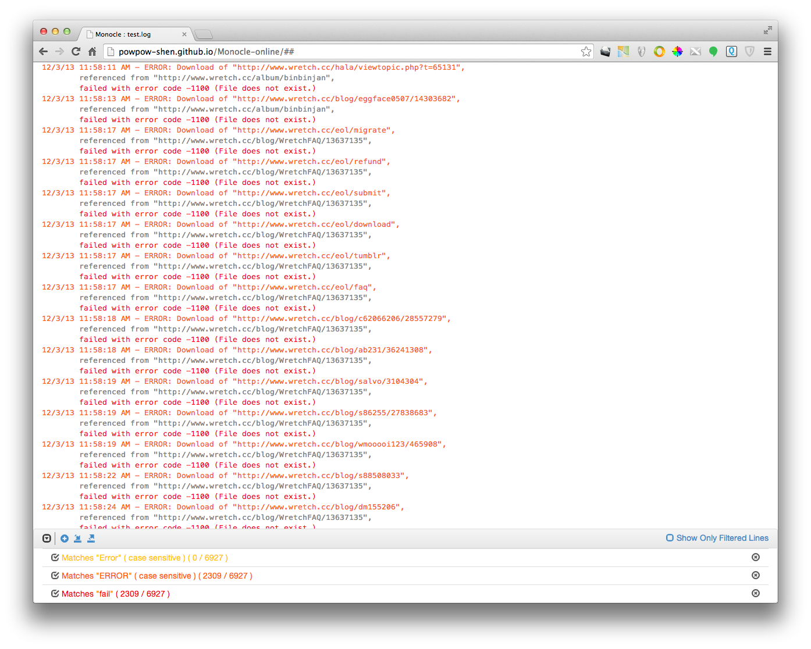

-
Here is the online service.
-
The chrome offline extension is not ready yet.
-
Usage and screenshot:
Drag and drop a text file to the droppable area, and then feel free to add/remove your filters. You can also check "Show Only filtered lines" to help you analyze. Don't worry, I don't keep any file.

More features are comming soon.
Please use Monocle-online to develop if you would like to contribute.
Inspired by TextAnalysisTool.NET.
Copyright (c) 2014 Powpow Shen ( http://powpowsfantasy.wordpress.com/)
Licensed under the MIT ( http://www.opensource.org/licenses/mit-license.php) license.